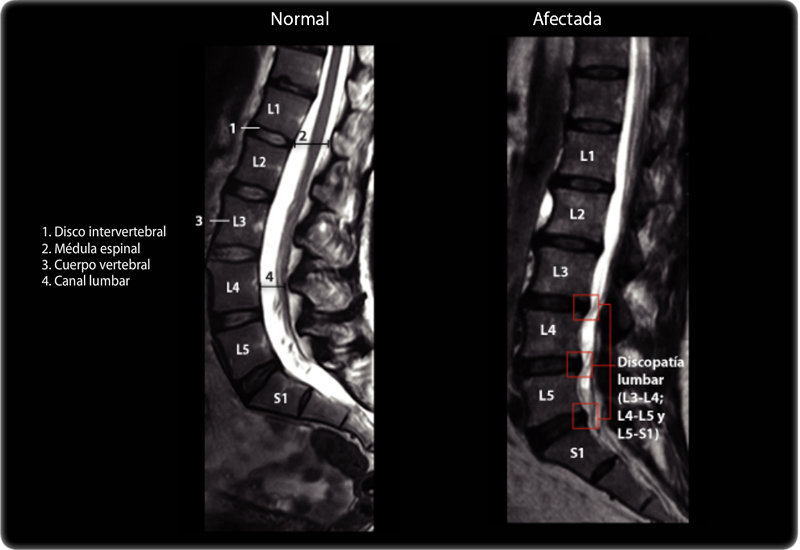

Radiculopatía
La radiculopatía se define como la afección de las raíces nerviosas de la columna que se produce por diferentes enfermedades
1
.
Dependiendo de la raíz nerviosa comprimida, el dolor se sentirá en diferentes zonas de la extremidad inferior
1
.